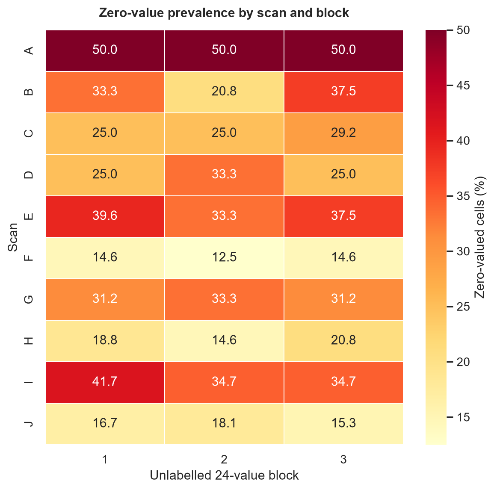
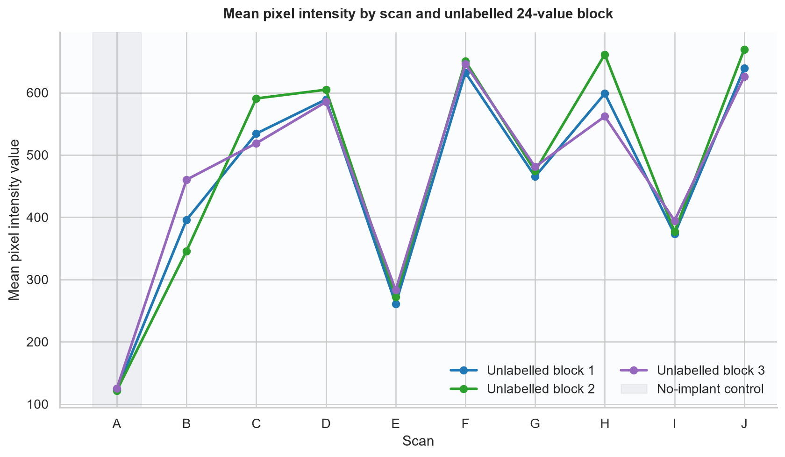
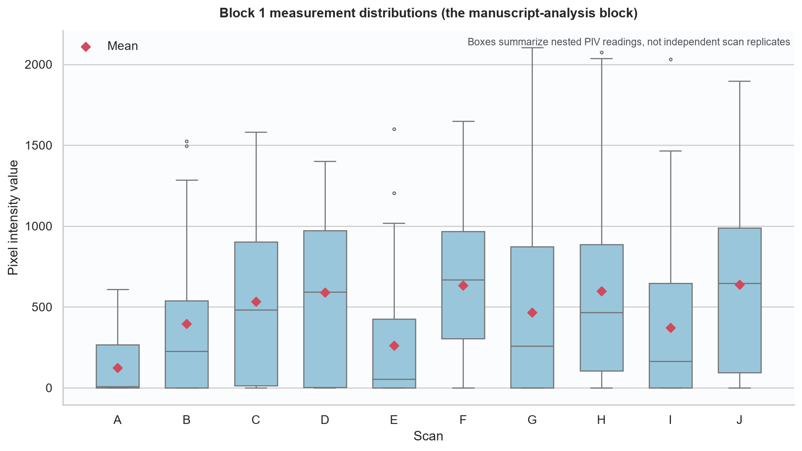
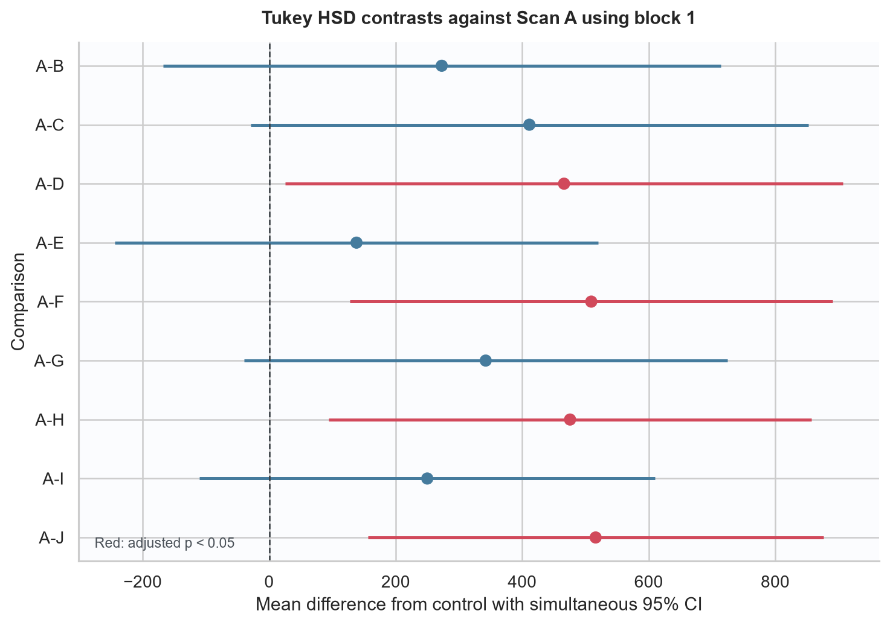
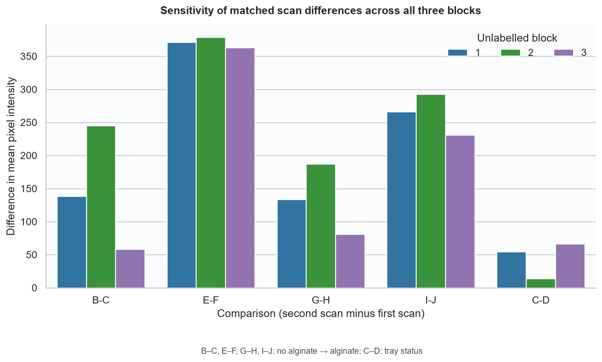

CBCT alginate study
data audit & visualization
The workbook is cell-complete, but the measurement schema and experimental unit must be resolved before its inferential results are submission-ready.
data/private/,
is ignored by Git, and is never exported row-by-row. All tables and figures below are aggregate.Executive finding
The workbook holds 72 values per site in three unlabelled 24-value blocks. The manuscripts describe 24 values per site. Nine of ten scan means reproduce at two decimals from block 1; Scan F is 632.2047 in the workbook (632.20 at two decimals) but 632.21 in both manuscripts. All nine Scan A p-values reproduce as a ten-group Tukey HSD on block 1. That identifies the prior calculation but leaves two-thirds of the stored measurements unexplained.
All four like-for-like alginate comparisons move toward higher mean PIV in all three blocks. This is descriptively consistent, but the PIV locations are nested technical readings within scans; they are not automatically independent experimental replicates.
Workbook audit
| check | result | interpretation |
|---|---|---|
| Worksheets | 1 | One worksheet expected |
| Worksheet extent | 32 × 74 | Includes notes/blank padding |
| Data rows / implant sites | 18 | Expected 18 |
| Scans | 10 | Expected A–J |
| Numeric measurements | 1296 | 18 sites × 72 cells |
| Missing/non-numeric values | 0 | Validated before analysis |
| Zero values | 358 | 27.6% of numeric cells |
| Negative values | 0 | None expected in current workbook |
| Minimum | 0.000 | Descriptive only |
| Maximum | 2627.658 | Descriptive only |
| Duplicate site codes | 0 | Site codes should be unique |
| Merged ranges | 6 | Scan labels span multi-site rows |
| Formula cells | 0 | Workbook contains values, not calculations |
| Comments | 0 | No embedded data notes |
| Tables/charts | 0/0 | No structured Excel table or chart |
| Non-empty note rows after data | 5 | Free-text requested comparisons |
- No header row, codebook, formulas, validations, structured table, or cell comments define the 72 columns.
- Six merged scan labels must be carried down to secondary implant sites.
- 358 values are zero; the file does not define whether zero is valid PIV, clipping/background, or encoded missingness.
- Qualitative Likert ratings are absent, so inter-rater reliability cannot be audited.

Manuscript mean reproduction
| scan_id | manuscript_mean | workbook_block_1_mean | difference | reproduces_at_2dp |
|---|---|---|---|---|
| A | 123.0500 | 123.0490 | -0.0010 | Yes |
| B | 395.8400 | 395.8357 | -0.0043 | Yes |
| C | 534.3600 | 534.3561 | -0.0039 | Yes |
| D | 589.1700 | 589.1712 | 0.0012 | Yes |
| E | 261.0900 | 261.0915 | 0.0015 | Yes |
| F | 632.2100 | 632.2047 | -0.0053 | No |
| G | 465.3300 | 465.3335 | 0.0035 | Yes |
| H | 598.6700 | 598.6711 | 0.0011 | Yes |
| I | 372.9700 | 372.9688 | -0.0012 | Yes |
| J | 639.1300 | 639.1292 | -0.0008 | Yes |


Scan A comparisons
| comparison | meandiff | manuscript_p | p_adjusted | lower | upper | reject | reproduces_at_3dp |
|---|---|---|---|---|---|---|---|
| A-B | 272.7868 | 0.6220 | 0.6220 | -168.0694 | 713.6429 | No | Yes |
| A-C | 411.3071 | 0.0910 | 0.0911 | -29.5490 | 852.1632 | No | Yes |
| A-D | 466.1222 | 0.0290 | 0.0286 | 25.2661 | 906.9783 | Yes | Yes |
| A-E | 138.0426 | 0.9790 | 0.9790 | -243.7501 | 519.8352 | No | Yes |
| A-F | 509.1557 | 0.0010 | 0.0011 | 127.3631 | 890.9483 | Yes | Yes |
| A-G | 342.2845 | 0.1230 | 0.1230 | -39.5081 | 724.0771 | No | Yes |
| A-H | 475.6221 | 0.0030 | 0.0034 | 93.8295 | 857.4148 | Yes | Yes |
| A-I | 249.9199 | 0.4530 | 0.4526 | -110.0377 | 609.8774 | No | Yes |
| A-J | 516.0802 | 0.0000 | 0.0003 | 156.1227 | 876.0377 | Yes | Yes |

Matched-configuration sensitivity
| comparison | scenario | block | first_scan_mean | second_scan_mean | difference_second_minus_first |
|---|---|---|---|---|---|
| B-C | 1 implant | 1 | 395.8357 | 534.3561 | 138.5203 |
| B-C | 1 implant | 2 | 345.9175 | 590.7710 | 244.8534 |
| B-C | 1 implant | 3 | 460.3228 | 518.8053 | 58.4825 |
| E-F | 2 implants, contralateral arches | 1 | 261.0915 | 632.2047 | 371.1131 |
| E-F | 2 implants, contralateral arches | 2 | 272.0713 | 650.6218 | 378.5505 |
| E-F | 2 implants, contralateral arches | 3 | 283.0183 | 645.8947 | 362.8763 |
| G-H | 2 implants, same jaw | 1 | 465.3335 | 598.6711 | 133.3376 |
| G-H | 2 implants, same jaw | 2 | 474.1475 | 661.3955 | 187.2480 |
| G-H | 2 implants, same jaw | 3 | 480.9565 | 561.9211 | 80.9646 |
| I-J | 3 implants | 1 | 372.9688 | 639.1292 | 266.1603 |
| I-J | 3 implants | 2 | 376.7799 | 669.5394 | 292.7595 |
| I-J | 3 implants | 3 | 394.5961 | 625.5557 | 230.9596 |
| C-D | Alginate with tray vs tray removed | 1 | 534.3561 | 589.1712 | 54.8151 |
| C-D | Alginate with tray vs tray removed | 2 | 590.7710 | 604.7926 | 14.0216 |
| C-D | Alginate with tray vs tray removed | 3 | 518.8053 | 585.0799 | 66.2745 |

Unresolved manuscript p-values
The manuscript does not name the method for its second p-value table. Applying the same ten-group Tukey analysis does not reproduce those three values:
| comparison | manuscript_p | ten_group_tukey_p | difference | reproduces_at_3dp |
|---|---|---|---|---|
| E-F | 0.0120 | 0.0067 | -0.0053 | No |
| G-H | 0.0870 | 0.9383 | 0.8513 | No |
| I-J | 0.0490 | 0.0321 | -0.0169 | No |
Risks requiring resolution
- Unknown schema: define block, radius, direction, repeat/slice, observer, unit, and zero semantics.
- Endpoint selection: explain why block 1 was primary or reanalyze all blocks using a stated repeated-measures model.
- Experimental unit: PIV points within a scan are correlated; identify independent skull/scan/implant replication.
- Confounding: scan IDs change implant number/location and alginate; Scan A also removes the implant.
- Audit trail: link CBCT IDs, ROI/slice coordinates, extraction code/version, and qualitative scores.
- Reporting: use
p < 0.001, notp = 0.000, and report effects with intervals.
Recommended remediation
- Freeze a signed-off data dictionary and preserve the workbook as an immutable private source.
- Reconcile all three blocks with the manuscript endpoint before further inference.
- Use planned matched contrasts and a justified hierarchical/repeated model only when independent replication supports it.
- Document and reproduce the E–F, G–H, and I–J p-value method.
- Add blinded qualitative ratings and a justified inter-rater agreement analysis.
- Archive the final environment, source checksum, software versions, and analysis log.
Reproduce locally
python -m pip install -e ".[dev]"
python -m cbct_artifact_analysis run
python -m pytest
python scripts/privacy_guard.py --tracked